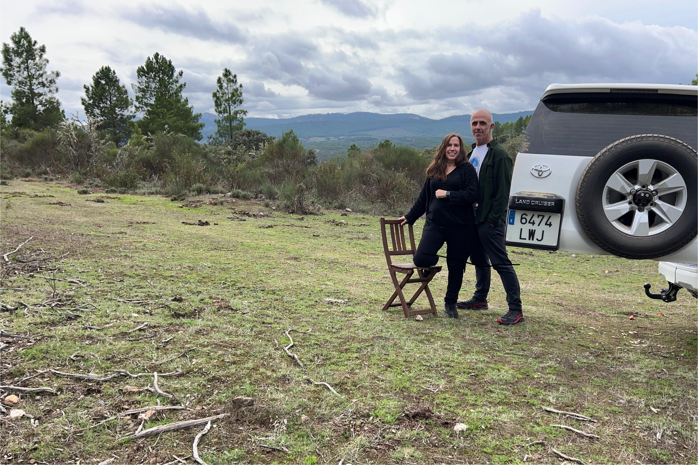
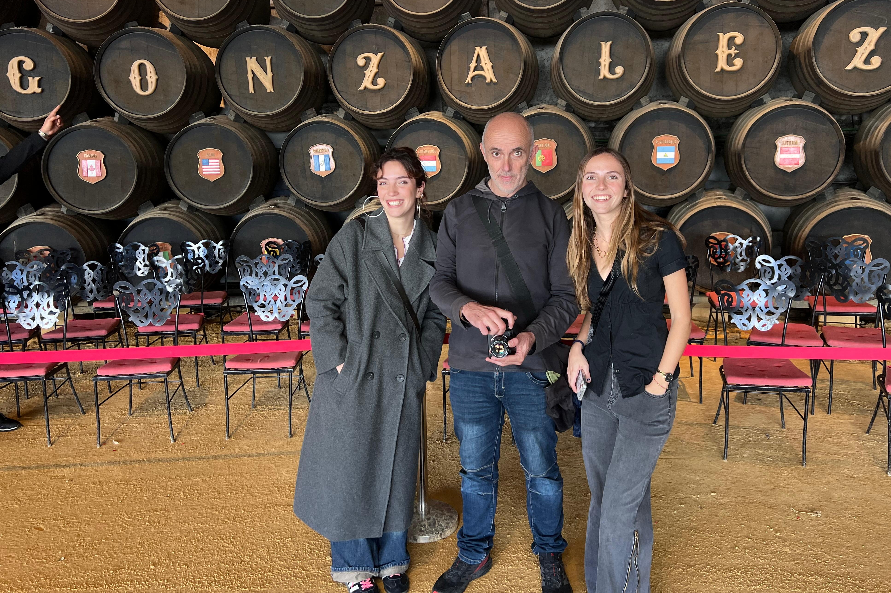
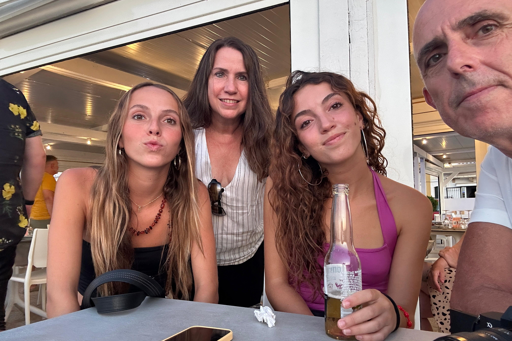
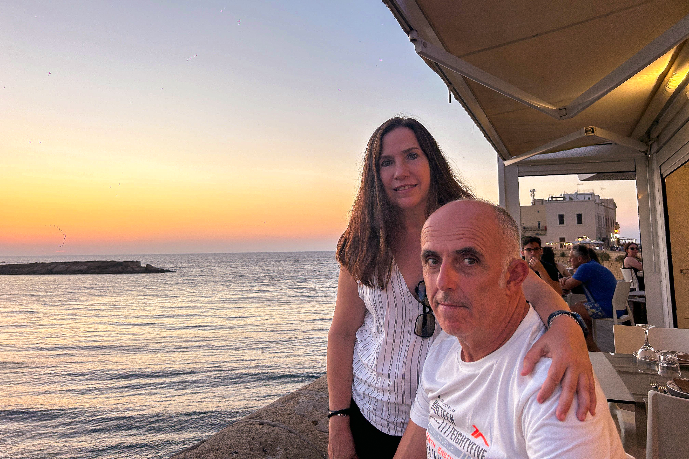
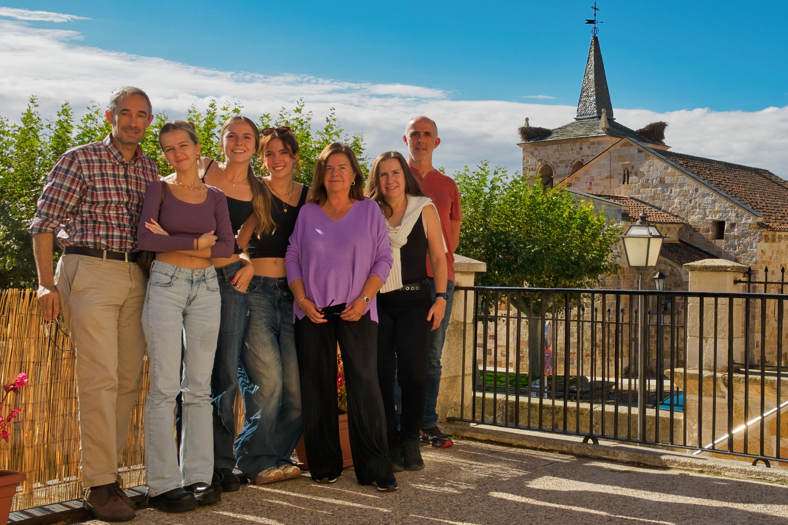
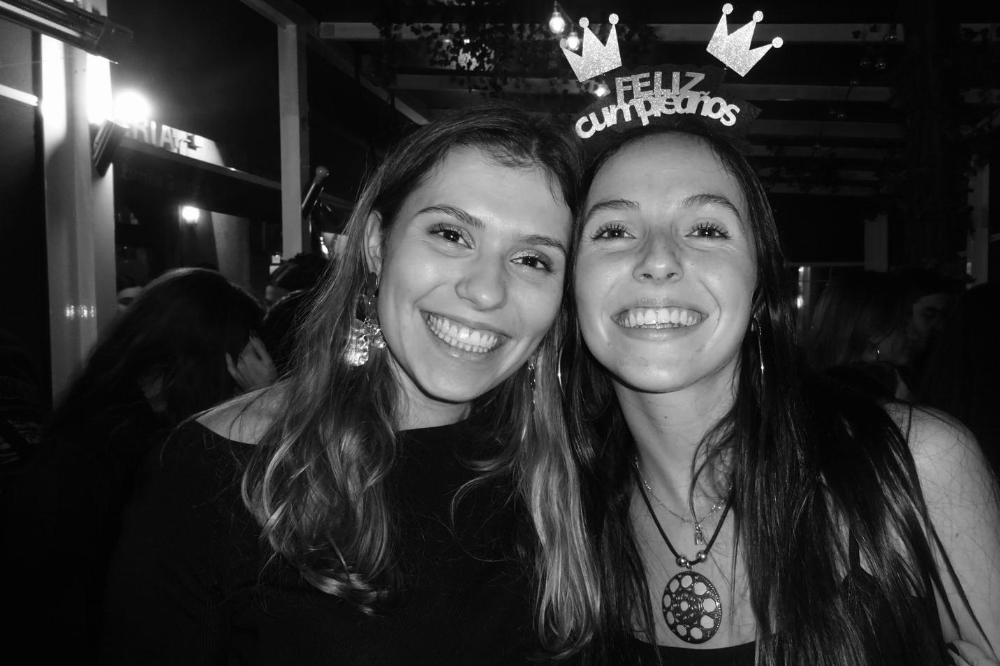
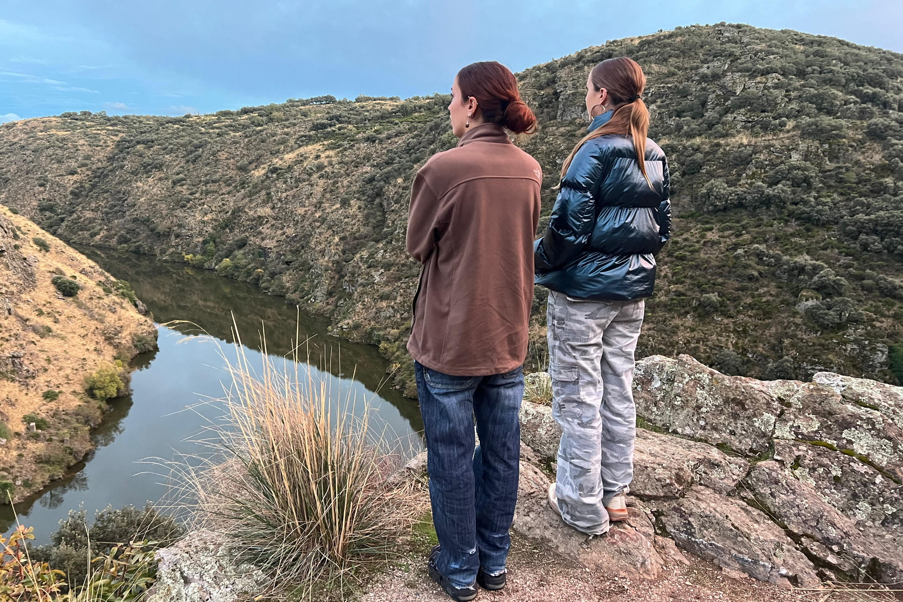

Genera calendarios de pared en español con tus fotos, días especiales y número de semana ISO. Listos para imprimir en A3.
Una imagen diferente para cada mes. Soporte para JPG, TIF, PNG y WebP.
297 × 420 mm a 300 DPI con 4 mm de sangrado para impresión profesional.
Cumpleaños y fechas señaladas resaltados con imagen de fondo en la celda del día.
Columna lateral con número de semana según el estándar ISO 8601.
Sábado y domingo con fondo gris para diferenciarlos a golpe de vista.
Pie de foto personalizable por mes mediante un sencillo fichero titles.txt.







Necesitas Python 3 y la librería Pillow.
git clone https://github.com/xalvagp/calendargdep26.git cd calendargdep26 pip install pillow
Crea la carpeta del año y copia una foto por mes con el nombre del mes en español.
mkdir -p pics/2026 # Copia tus fotos: pics/2026/Enero.jpg pics/2026/Febrero.tif pics/2026/Marzo.webp # … y así hasta Diciembre
Formatos soportados: .jpg .jpeg .tif .tiff .png .webp
Crea pics/2026/titles.txt con exactamente 12 líneas, una por mes.
Churros con la abuela Tarraco Parada del 61 Diego de León …
El script genera 12 PDFs en la carpeta calendarios_pdf/.
python3 generate_calendars.py 2026
Para añadir o cambiar días especiales, edita la lista SPECIAL_DAYS en generate_calendars.py
y coloca la imagen correspondiente en imagenes_special_days/.
Instala Flask y lanza server.py. Abre http://localhost:5000 en tu navegador.
pip install flask python3 server.py
• Seleccionar o arrastrar fotos para cada mes
• Ver el progreso (X de 12 fotos)
• Generar los 12 PDFs con un clic
• Cambiar de año sin tocar la terminal